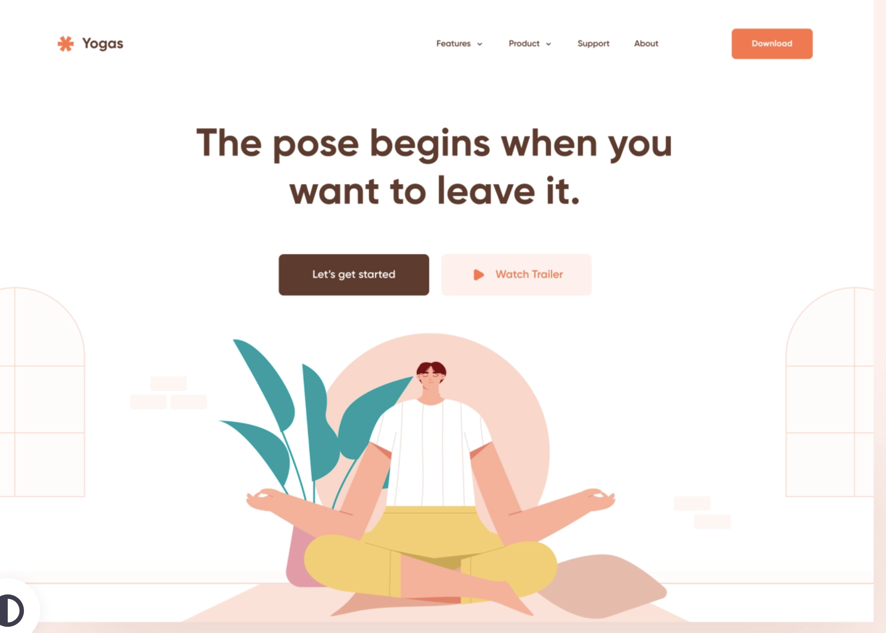
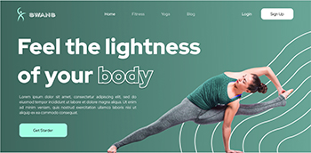

This website has a clear structure of the content, which include step-by-step instruction on how to perform the yoga workout along with an image of a lady performing the workout, which enhances the clarity of the content which I can possibly adapt on my website.
The article also includes links to related content, such as a "Yoga for Beginners" series and other articles on different yoga poses. Your website can also provide additional resources, such as recommended props, playlists, and other tips for getting the most out of each practice.
From my research, another benefit of AI on the web is that it can help improve online security. AI-powered security systems can detect and prevent cyber attacks, identify potential threats, and quickly respond to security breaches. That means we could have a safer online environment for everyone. Plus, AI could help filter out harmful content like fake news and hate speech, which could make the online world a more positive place.
I would take inspiration from having these illustrations on the website to match the overall theme of calmness that yoga brings. Specifically, with a soft and cartoonish style of the illustrations. The use of soft colors and a cartoonish style can create a sense of calmness and relaxation, which aligns with the principles of yoga. This can help to establish a positive association with the website and encourage users to engage with the content.
I really like the idea of having bold text for the title along with an image of a lady doing a yoga workout. Specifically, I like the technique of how the lady’s background is removed and placed on the header on the home page, which could improve the aesthetics and professionalism of the website.